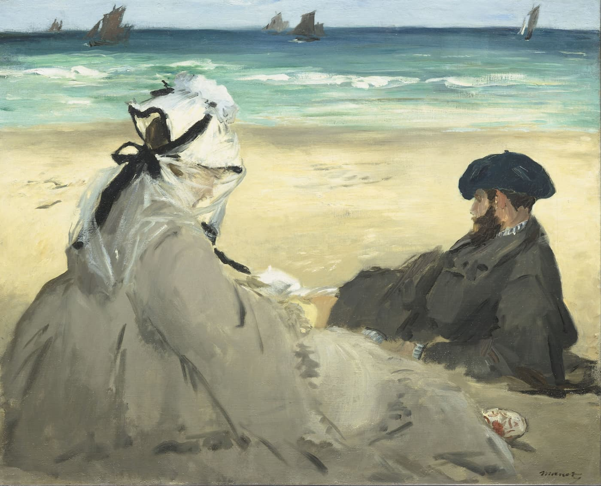

масло
Клод Моне — «Лодки на пляже в Этрета»
Boats on the Beach at Étretat, 1885
Репродукция на холсте. Спокойный морской берег Нормандии: лодки на песке, холодное небо и мягкая светлая палитра без лишней перегруженности.
4 900 ₽